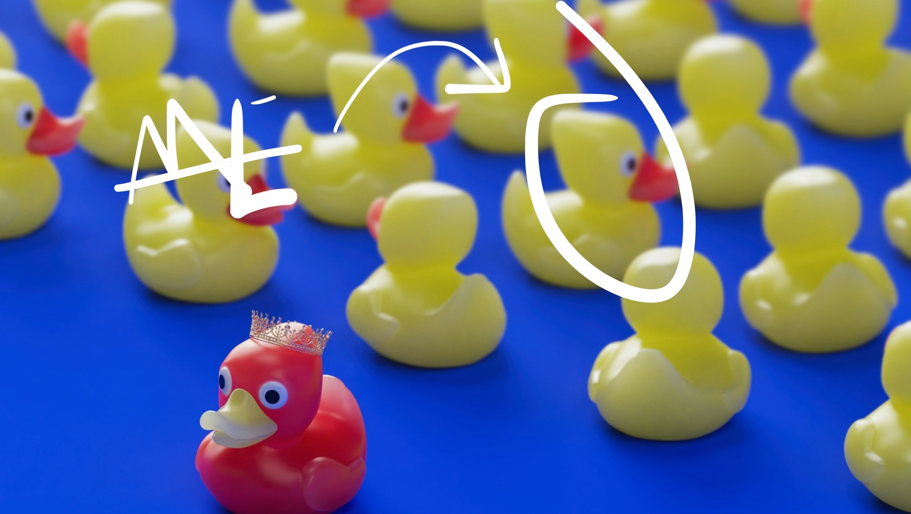

Beyond Transcript
Why do I feel like I know Nothing after graduation

When I first entered university, I thought I understood how the game worked. Study hard, get good grades, complete the required courses, graduate. That had been the formula for years. In high school, especially in an Asian education context, performance was clear and measurable. You knew what success looked like. It was a number on a transcript. It was ranking. It was comparison. It was the reassurance that if you did well enough, the future would take care of itself.
So naturally, I carried that mindset into university.
I treated university like an advanced version of high school. More difficult courses, yes. More freedom, maybe. But fundamentally the same structure: attend lectures, complete assignments, prepare for exams, aim for a strong GPA. I believed that if I kept winning this academic “arena,” everything else would follow.
What I did not realize at the time was that university is not simply an extension of high school. Or at least, it is not supposed to be.
In high school, the path is mostly defined for you. The subjects are fixed. The expectations are clear. You are told what to learn and how you will be evaluated. In many education systems, especially those built around large-scale standardized exams, this structure makes sense. It creates fairness. It creates comparability. It creates a reliable way to filter and allocate opportunities. Within that context, focusing on grades is rational.
But university operates in a different dimension.
The moment I stepped into college, I technically gained freedom: freedom to choose courses, freedom to switch directions, freedom to explore. Yet mentally, I was still operating as a “student” in the old sense — someone who follows instructions well and performs within a predefined structure. I did not ask myself deeper questions: What kind of engineer do I want to become? What problems do I want to solve? What systems do I want to understand?
Instead, I optimized for the only metric I knew how to optimize: grades.
This misalignment created a subtle but powerful consequence. I completed courses. I passed exams. I accumulated knowledge in digital design, embedded systems, programming languages. But I rarely paused to ask how these pieces connected into a real system. I learned modules, not systems. I solved problems designed to be solvable within a semester, not problems messy enough to resemble reality.
Looking back, I realize that my perception of university shaped my behavior. I thought the goal was to finish what was assigned. I did not see that the real challenge was to define what should be assigned to myself.
And so, graduation arrived with an uncomfortable feeling: I had done everything correctly, yet something essential was missing. I had mastered courses, but I was not sure I had learned how to build a complete system. I had accumulated tools, but I did not fully know when or why to use them.
The problem was not that university failed me. Nor was it that one educational system is better than another. Different systems serve different social and economic structures. Some prioritize breadth and density of foundational knowledge; others emphasize autonomy and exploration. Both have their logic. The real issue was my assumption that university should be treated like high school — that performing well within the course structure was equivalent to preparing for the complexity of the real world.
That assumption, small as it seemed at the beginning, shaped the entire trajectory of my undergraduate experience.
And only near graduation did I begin to understand its cost.